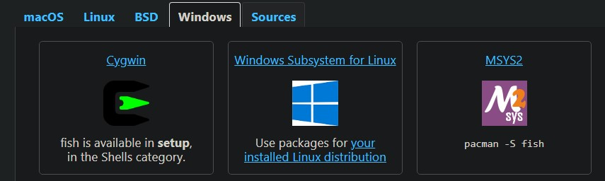
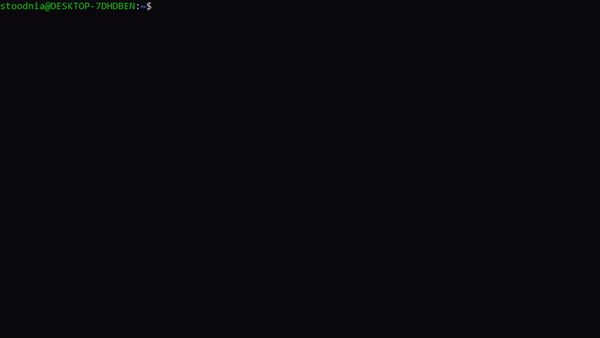
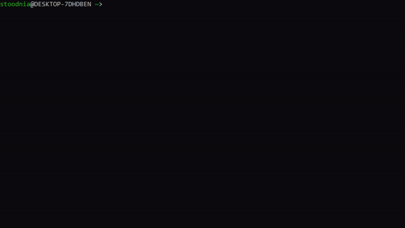
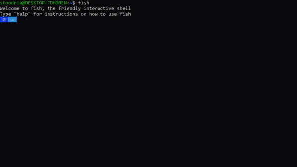
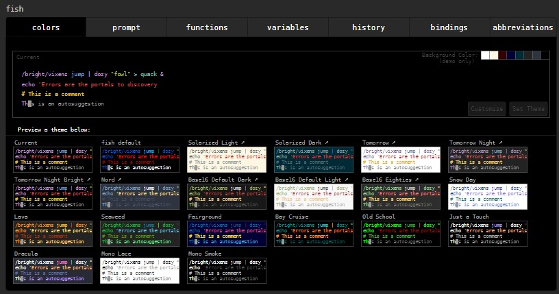

HISTORIA POWSTANIA FISHA
Friendly Interactive SHell, w skrócie fish. Tak jak sama nazwa wskazuje,
powłoka została stworzona aby być bardziej przyjazną użytkownikowi.
Pierwsze wydanie zostało wypuszczone 13 Lutego 2005 przez Axel
Liljencrantz, z początku głównego dewelopera narzędzia. W marcu 2009
roku została wypuszczona ostatnia wersja 1.x. Pod koniec 2011 roku osoba
przedstawiająca się nicknameme "ridiculousfish" dołączyła do prac nad
narzędziem, które zaskutkowały wypuszczeniem wersji beta narzędzia pod
nazwą "fishfish". Narzędzie to korzystało z poprzednich wersji fish'a i
ostatecznie stało się fish'em 2.0, który został wydany 1 września 2013.
CZYM TAK NAPRAWDĘ JEST FISH?
Fish to w pełni wyposażona powłoka wiersza poleceń (jak bash lub zsh),
która jest inteligentna i przyjazna dla użytkownika. Fish obsługuje
zaawansowane funkcje, takie jak podświetlanie składni, autosugestie i
uzupełnianie kart, które po prostu działają, bez konieczności uczenia
się lub konfigurowania ich. Jeśli chcesz, aby Twój wiersz poleceń był
bardziej produktywny, użyteczny i zabawniejszy, bez uczenia się mnóstwa
tajemnej składni i opcji konfiguracyjnych, to fish może być właśnie tym,
czego szukasz!
Jako alternatywa do basha czy zsh, fish to nowy terminal pełen kolorów
ułatwiających rozumienie występujących procesów. "Rybka" to wsparcie dla
każdego, nie zależnie od poziomu zaawansowania. To sufler, który
podpowiada zapomniane kwestie podczas spektaklu kodowania. To kolega z
ławki, który zawsze da ściągnąć od siebie przykład i jeszcze weźmie na
siebie odpowiedzialność za błędy przy pracy. To nauczyciel, który pokaże
błędy i rozwiązania. To prosty w obsłudze język, przy którym wszystko
rozwiązywane jest za pomocą komend, a nie skomplikowanej i trudnej do
zapamiętania składni. Podsumowując, to przyszłość i wyciągnięcie ręki w
kierunku programistów.
POCZĄTKI Z FISHEM
Rozpoczęcie przygody z fishem jest bardzo, bardzo proste! Strona domowa
powłoki, na której znajdują się też poradniki i pliki instalacyjne,
pełna jest wiedzy.
fishshell.com
Fish'a można zainstalować na praktycznie każdym systemie, nawet na
emulatorze windowsowym WSL

Po zainstalowaniu narzędzia "włączamy" je komendą
fish
a jej wykonanie może odnotować dzięki wyświetlanemu komunikatowi a także
zmianie znaku zachęty. Natomiast komendą
exit
wracamy spowrotem do bazowej powłoki

Po zainstalowaniu powłoki warto doinstalować jeszcze framework OMF,
czyli Oh-My-Fish. Pozwoli on na dodatkową customizacje terminala, na
przykład instalacje nakładek wyglądowych.
Cała instalacja polega na wpisaniu poniższych komend, w tej
samej kolejności.
sudo apt install curl
curl -L https://get.oh-my.fish | fish
Po zainstalowaniu OMF, instalacja nakładek polega na wpisaniu komendy
omf install {nazwa nakładki}
i wybraniu konkretnej nakładki, którą chcemy zainstalować

RÓŻNICE I UDOGODNIENIA
Jedną z wielu rzeczy zmienionych w powłoce fish jest składnia skryptów.
Do tej pory w instrukcji warunkowej, albo na przykład konstrukcji
„case”, skrypt kończyliśmy słowami „fi” i „esac”. W powłoce fish każde
słowo kończące zamienione jest na uproszczone „end”. Dodatkowo po
warunku nie musimy pisać już „then”, bo w końcu oczywistym jest, że po
warunku wypisujemy pożądane działanie programu. To tylko przykłady
uproszczonej składni, ponieważ jest tego więcej!

Jak można było zauważyć na powyższej animacji, słowa „then” oraz „fi”
podświetlane były na czerwono, co sygnalizowało błąd. Dodatkową
dogodnością było automatyczne formatowanie wpisywanego tekstu, co
również widać powyżej.
Na koniec warto wspomnieć o systemie konfigurowania powłoki. Po wpisaniu
komendy
fish_config
zostanie otwarta strona w przeglądarce na której dokonujemy zmian w
wyglądzie i funkcjonowaniu naszego terminala. Mamy możliwość ustawienia
aliasów a także sprawdzenia historii komend. A wszystko jak na tacy
podane pod jedną komendą!
